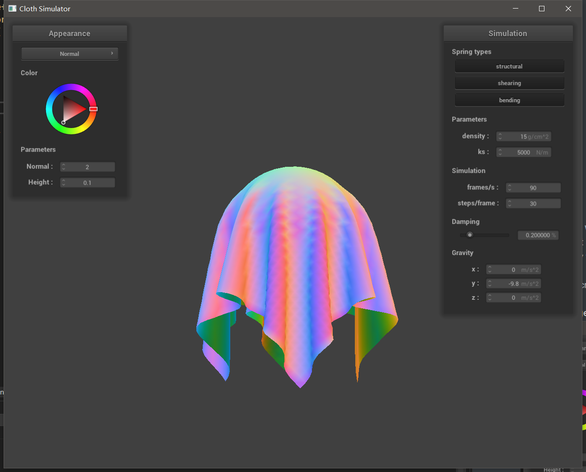
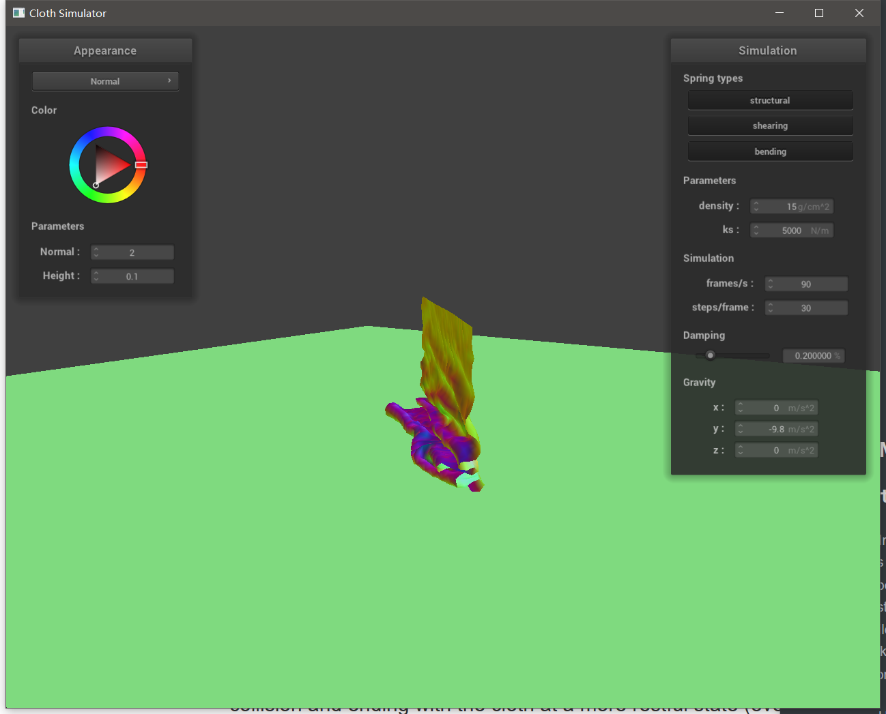

Project 4 Write Up
Part 1
In this part, we implement Cloth::buildGrid, which which takes the cloth's parameters and populates the cloth's point_masses and springs vectors with the necessary point masses and springs, respectively, in the grid. First, we create point masses from num_width_points and num_height_points. The orientation is horizontal or vertical based on orientation. If the point mass is pinned, set its pinned boolean value to be true. Next, we create structural, shearing and bending springs. Structural springs are the spring that directly connect nearby point masses. Shearing springs are the springs that connect diagonal mass points. Bending springs are springs that connect apart point masses.
Here are some screenshots of scene/pinned2.json from a viewing angle where you can clearly see the cloth wireframe to show the structure of your point masses and springs.
Here is the wireframe looks like without any shearing constraints, which are just basic squares.

Here is the wireframe looks like with only shearing constraints, which are just basic squares in another direction and are incomplete in the edges.
Here is the wireframe looks like with all constraints, which are consisted of squares and cross lines in it.
Part 2
In this part, we simulation the motion of mass point by Verlet integration. First, we compute the total force acting on a point mass. The total force is consisted of two parts, external force and spring force. The external force is given as a parameter external_accelerations and computed by Newton’s second law
Then we experience some simulation parameters.
First, ks. There is not much difference when cloth is falling. However, there is some difference for the rest status. When ks is high, the cloth is more flatten. Here are a sequence of screenshots for ks equals to 100, 1000 and 5000 respectively.
Then, density, which only influences the mass of each mass point. With high density, the cloth will look more ‘heavy’ and has more wrinkles during rest state. Also, when falling, cloth will have more oscillation. Here are a sequence of screenshots for density equals to 1, 50 and 100 respectively.
Last, damping. I have a say in this matter because I forgot to divide 100 for damping at the beginning and the cloth’s movement is extremely slow. The higher the damping is, the slower the motion because damping represents some kind of friction. Here are a sequence of screenshots for damping equals to 0.2%, 0.5% and 1 % respectively. The screenshots are all taken after 5 seconds after simulation start.
Here is a screenshot of scene/pinned4.json in the final resting state for the default parameters.
Part 3
In this part, we deal with the collision between mass point and sphere and plane. The basic idea is ‘bump’ the mass point to where it should be, i.e, out of the boundary. The final position is influenced by friction (although I do not understand why we need this).
Here are screenshots with ks equals to 500, 5000 and 50000 respectively. As the ks increases, the cloth become more robust and shrinks more, which is reasonable because the ks influence how strong the point masses are connected.

Here is a screenshot of my shaded cloth lying peacefully at rest on the plane with custom textures.
Part 4
In this part, we implement the self-collision. The naïve approach, which is considering every pair of mass point, takes
Here are three screen shot of cloth falls and folds on itself.

Then, we play with density and ks and see its effect.
For density, the higher the density is, the faster the cloth falls. Also, the cloth will be more flatten at rest state.
For ks, the higher ks will lead to less wrinkles in cloth for the rest state. ks do not have a explicitly effect on falling speed.
Part 5
In this part, we implement different shaders with GLSL, including diffuse shading, Blinn-Phong Shading, texture mapping, displacement mapping and bump mapping. Most of them are already implemented before.
A shader program is used to create some kinds of visual effects for a scene, which is consisted of two parts, vertex shader and fragment shader. Vertex shaders are used to preprocess vertex, i.e, transforming the property of vertex (like position, normal) from the local space to model space. Then it passed the model space properties to the fragment shader. Fragment shader is used to calculate the color and lighting of a fragment in the scene based on the surface property and some algorithms.
The Blinn-Phong shading model divides lighting into three components: ambient, diffuse and specular light. Ambient light is the environment lighting. Diffuse light is the scattered light, which is the same as diffuse model. Specular light is the reflected light from the surface.
Here a screenshot of Blinn-Phong shader outputting only the ambient component, a screen shot only outputting the diffuse component, a screen shot only outputting the specular component, and one using the entire Blinn-Phong model. For ambient lighting, the Ia is set to be (2.0,2.0,2.0). Other parameters are kd = 1.0,ka = 0.1,ks = 0.5 and p = 100.

Here is a screen shot of my texture mapping shader with own custom texture.
Here is a screenshot of bumping mapping on the cloth and on the sphere. The height is set to be 2 and normal is 2.

Here is a screenshot of displacement mapping on the sphere with height to be 0.04 and normal to be 100.
The difference between two shaders is the displacement shader change the position of vertex. The renders generated with displacement shader reflect the height more vividly. You can see the edges of cloth is changing with the height map.
If we increase the sphere mesh’s coarseness, although the change is not very significant, the bumping shader produces more subtle and detailed result and the displacement shader produces more detailed result (the edge become smoother), too.
Here are two screen shot of the mirror shader on the cloth and on the sphere.